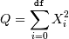
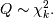
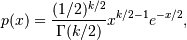
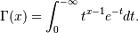

numpy.random.chisquare¶
- numpy.random.chisquare(df, size=None)¶
Draw samples from a chi-square distribution.
When df independent random variables, each with standard normal distributions (mean 0, variance 1), are squared and summed, the resulting distribution is chi-square (see Notes). This distribution is often used in hypothesis testing.
Parameters: df : int
Number of degrees of freedom.
size : int or tuple of ints, optional
Output shape. If the given shape is, e.g., (m, n, k), then m * n * k samples are drawn. Default is None, in which case a single value is returned.
Returns: output : ndarray
Samples drawn from the distribution, packed in a size-shaped array.
Raises: ValueError
When df <= 0 or when an inappropriate size (e.g. size=-1) is given.
Notes
The variable obtained by summing the squares of df independent, standard normally distributed random variables:

is chi-square distributed, denoted

The probability density function of the chi-squared distribution is

where
 is the gamma function,
is the gamma function,
References
[R213] NIST “Engineering Statistics Handbook” http://www.itl.nist.gov/div898/handbook/eda/section3/eda3666.htm Examples
>>> np.random.chisquare(2,4) array([ 1.89920014, 9.00867716, 3.13710533, 5.62318272])